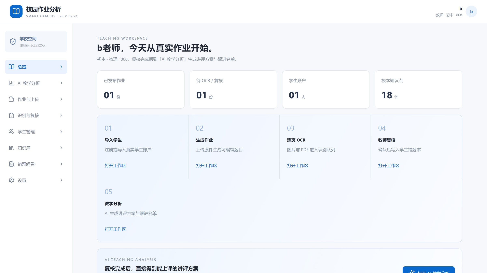
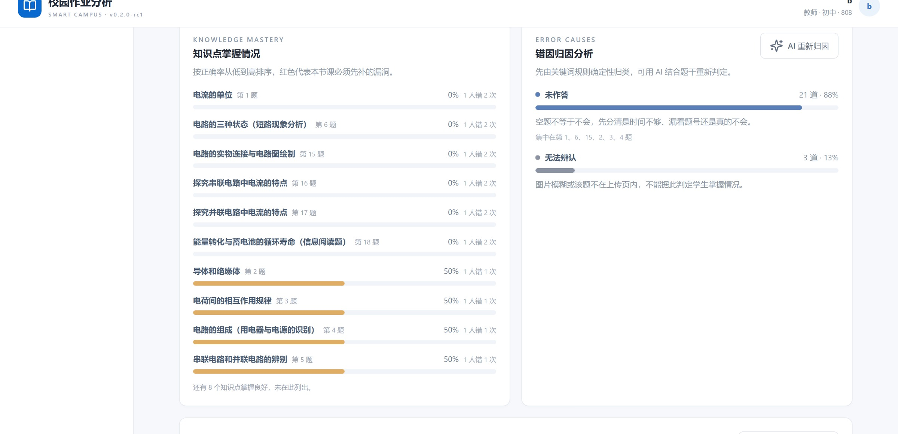
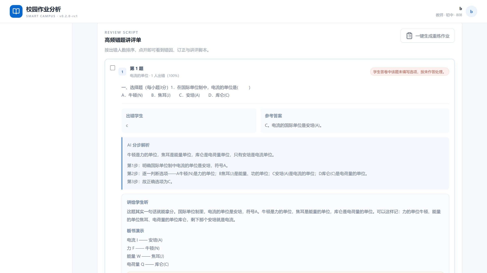
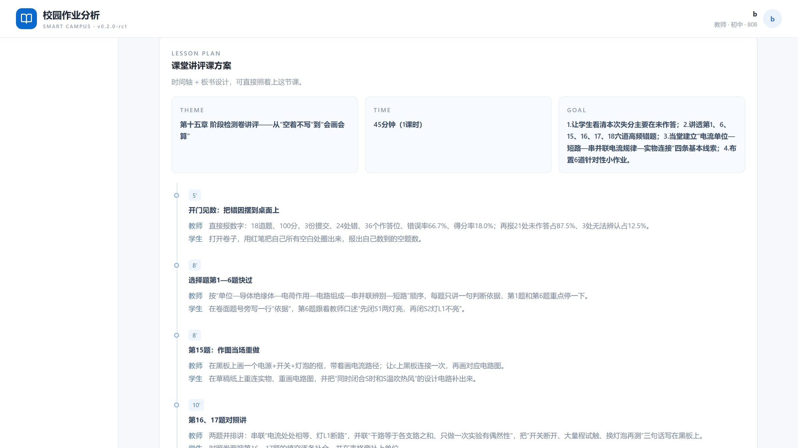

2026 梅沙青少年黑客松邀请赛 · MES HACKATHON
Smart Campus Homework Analyzer
v0.2.0-rc1 · B3组 · MIT License · 数据留在学校本地
The problem
一位老师要面对的，
从来不只是“把作业改完”。
逐题批注、写评语、登记分数。整块的时间被切成碎片，一个班就要一晚上。
全班错题率、知识点掌握度、错因分布——想看清楚，只能一题一题数。
第二天上课，能讲的往往只是“感觉错得比较多的那几道”。
结果：老师最累的那部分，恰恰是最容易被浪费的那部分。
The insight
错题本上躺着全班最真实的学习证据，却没有人有时间把它翻译成 “下一节课该讲什么、该给谁补什么”。
所以真正缺的不是一个更快的批改工具，
而是一台把 批改结果 变成
可上课内容 的翻译机。
The product
拍照上传 → AI 逐页识别批改 → 教师复核 → 自动生成班级学情、知识点掌握率、错因归因，以及可以直接照着上的讲评课方案。
现在就能打开、现在就能用。

How it works
每一步都留了人工确认的入口。
自动化负责速度，教师负责判断。
AI teaching analysis · v0.2.0 新增
不是一份更长的报告，
而是一份第二天能带进教室的东西。
Design principle
全部由教师已复核的数据计算得出。
最后一条是为了不因为扫描不清而冤枉学生。
只做转写与建议，不产生事实。
出错的代价是“换一种说法”，不是“算错一个数”。
一句话：让模型做它擅长的表达，让代码做它擅长的算术。
Knowledge mastery & error causes
18 个知识点按正确率从低到高排序；错因按题号严格归类，12 类内置规则，占比之和恒为 100%。

Review script
按出错人数排序，从最该讲的一道开始。
展开即见出错学生、参考答案与 AI 分步解析， 以及可以直接照读的讲评脚本。
每道高频错题都会给出


Lesson plan & differentiation
主题、课时、目标、时间轴（讲什么 / 教师做什么 / 学生做什么），以及可以照写的板书设计。
每个错因还会配一个 5 分钟内可执行 的课堂动作， 并给出可点名到人的分层辅导名单。
The student side
教师复核确认的错题才进入学生错题本；全部答对后标记知识点过关。
Real data · 初中物理 · 第十五章 阶段检测卷
AI 教学结论 · 原文摘录
“这份第十五章阶段检测卷全班只有 1 名学生（c）提交了 2 次、共 3 份记录，18 道题错 24 处、36 个作答位置错误率 66.7%， 得分率仅 18.0%。最要命的是 24 处错里 21 处是【未作答】（占 87.5%）…… 失分主要丢在“没动笔”而不是“不会”。”
Engineering
开源 MIT，可本地部署，数据不出校。
github.com/turtlelnc/MES-Homework · v0.2.0-rc1
Open source & stack
MIT License，代码在 GitHub 上，
一条命令就能自己跑起来。
源码、数据格式与统计口径全部公开。
github.com/turtlelnc/
MES-Homework
没有为了炫技引入多余依赖，每一层都可单独替换。
前端界面
React 19 · TypeScript 严格模式 · Vite 6 · Recharts
服务端与数据
Express 5 · SQLite（WAL） · Multer 上传类型与大小校验
文档与识别
PDF.js · mammoth · word-extractor · @napi-rs/canvas 服务端转图 · 视觉模型 OCR
模型与安全
10 个厂商预设 · OpenAI 兼容视觉格式 · API Key 服务端 AES-256-GCM 加密 · scrypt 口令哈希
测试与交付 · Vitest 单元测试 · node:test 端到端校验 · Cloudflare Worker 静态托管与 API 代理
What's next
下一步：教师加入学校的管理员审批、邮箱验证与密码找回、登录限流， 以及与学校真实样本对齐的识别率评估。
校园作业分析器 · Smart Campus Homework Analyzer
github.com/turtlelnc/MES-Homework · MIT License · v0.2.0-rc1
B3组
2026 梅沙青少年黑客松邀请赛